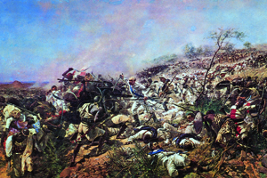
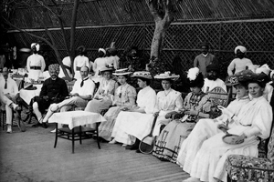
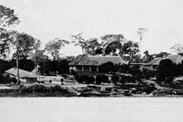

Lezione 17  La corsa alla spartizione del mondo
La corsa alla spartizione del mondo

-
270
550
-
240
650
-
310
480
-
260
515
-
150
470
-
200
610
-
260
720
-
190
160
-

DOGALI
Questo dipinto di Giovanni Cammarana, realizzato tra il 1899 e il 1893, raffigura la ferocia dello scontro della battaglia di Dogali: le truppe italiane, all'inizio della loro campagna di espansione in Eritrea, vengono travolte dai soldati del sovrano Giovanni IV di Asmara, riportando ingentissime perdite.
Nel 1887 viene annientato, a Dogali, un reparto italiano di 500 uomini.

INDIA
Una scena frequente ai tempi della dominazione inglese in India, che ritorna nel grande romanzo modernista Passaggio in India dell'inglese Edward Morgan Forster: una partita di tennis alla quale assistono ladies dell'aristocrazia britannica insieme a esponenti delle caste indiane più nobili.
CONGO
La stazione di Sanley Falls, uno dei paesaggi immortalati nel grande romanzo Cuore di tenebra scritto nel 1899 da Joseph Conrad: una spietata indagine sugli aspetti politici e psicologici più oscuri del colonialismo inglese in Africa.FASHODA
Partendo dai nuovi territori del Senegal, la Francia si sposta verso nord, alla conquista degli stati musulmani del Sahara, fino a unire l'Algeria alle altre colonie.
Quando i francesi cercano di espandersi anche verso il Mar Rosso si scontrano, nella crisi di Fashoda (1898), con gli inglesi, che controllano i territori degli attuali Egitto e Sudan.BERLINO
Nel 1888 in Germania sale al trono Guglielmo II, il cancelliere Bismarck dà le dimissioni.
A partire dal 1897 i tedeschi si adoperano per la costruzione di un'enorme flotta, con funzione antinglese, poiché la Gran Bretagna è storicamente una potenza marittima di prim'ordine.
Nel 1899, inoltre, imprese tedesche iniziano la costruzione di una ferrovia tra Costantinopoli e Baghdad, anch'essa vista come una minaccia dagli Inglesi, per la vicinanza con l'India, "perla" del loro Impero.AFGHANISTAN
Tra il 1876 e il 1885 continua la penetrazione della Russia in Asia, verso il massiccio del Pamir e nei territori dell'attuale Turkestan.
I russi arrivano, così, vicini alle zone di influenza inglese: India e Pakistan attuali. inglesi e russi si accordano per la creazione di uno stato cuscinetto che tenga separati i rispettivi territori: l'Afghanistan.INDOCINA
1862-1885: la Francia acquisisce i territori dei regni di Annam, attuale Vietnam, e della Cambogia. Nel 1893 acquisisce il Laos, nel 1897 l'Indocina.USA
1890: Per salvare il regime di libera concorrenza il governo statunitense vara nel 1890 la prima legislazione antitrust della storia. Essa vieta non solo la formazione di trusts, ossia di concentrazioni di imprese, ma anche gli accordi sui prezzi tra imprese operanti nello stesso settore.